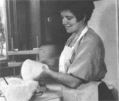
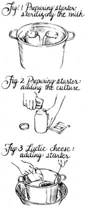
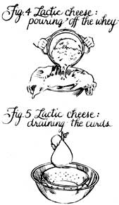
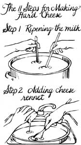
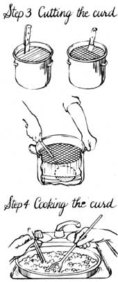
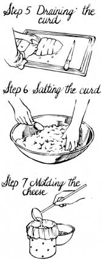
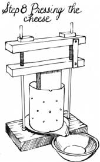
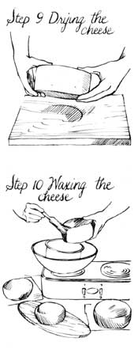
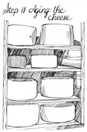

MOTHER'S HANDBOOK
My wife, Ricki, and I first got involved with cheese making out of necessity. Over the years, though, our involvement with this ancient culinary craft has grown from necessity to avocation, and has finally become a full-time vocation (we now own and operate a cheese-making supplies company). And believe it or not, that process has been a real adventure.
Our story began when we purchased several milk goats, each of which produced a generous gallon a day. At first we tried drinking the milk as quickly as our does manufactured it. Couldn't be done. Next we tried our hand at making yogurt. But, as with milk, one can consume only so much yogurt before it spoils-so our chickens inherited the surplus, which they gobbled until we feared they'd begin laying curdled eggs. And that was when we decided to try making cheese-a craft about which we knew absolutely nothing!
Since our local bookstores weren't exactly bulging with tomes on cheese making, I retreated to the University of Massachusetts Library and invested endless hours in searching out old recipes (primarily of 1800's vintage). As a result of this research, I finally gained enough knowledge and confidence to actually give cheese making a go.
For our premier attempt, we employed a homemade bricks-and-orange-juice-cans press in an effort to turn out a few pounds of feta (a brine-cured goat's-milk cheese of Greek origin). The homespun press did get the job done, but only barely , and it soon became apparent that if Ricki and I were going to continue pursuing our new hobby-of-necessity, we'd have to purchase some specialized equipment.
After drawing a blank in our search for a domestic cheese-making supplies house, we wrote to the embassies of just about every country in the world that I thought might have an industry producing small-scale cheese-making equipment. During the course of that search, we opened a correspondence with the Wheeler family, who, from their farm in the south of England, produce and market a beautiful, handcrafted cheese press. Eventually, Ricki and I made a pilgrimage to the Wheeler farm.
During our stay, Mrs. Wheeler thoroughly indoctrinated us in the craft of cheese making, giving special attention to the hard English varieties. (One evening, she served us a tasty homemade cheddar she called "Lilly cheese." We assumed it was a local variety peculiar to Dunchideock . . . until she took us out to the barn after dinner and introduced us to Lilly, her Jersey cow.)
Upon returning home from England, we purchased our own Jersey milk cow, Nelly, who turned out to be good company for our goats and provided us with ample amounts of the raw material that would allow us to begin making a greater variety of cheeses.
Through trial and error, we eventually perfected recipes for making a number of delicious cheeses at home-with a minimum of hassles and at the lowest possible cost-and eventually went on to found the New England Cheesemaking Supply Company. In the following discussion, I'd like to share some of what we've learned about the craft of cheese making over the years, in the hope that you, too, might become enthused about this ancient culinary art.
First, though, a bit of background.
Any milk used for cheese making must be fresh and of the highest quality. It shouldn't be mastitic (that is, drawn from an animal with inflamed udders), nor should it contain the residues of antibiotics, pesticides, herbicides, or sanitizers.
Do you own a dairy goat or cow? If so, special precautions are in order: Raw milk contains a variety of natural bacteria. Consequently, if you intend to make a raw-milk cheese that's aged less than 60 days, you must be absolutely certain that the milk contains no pathogens (disease-causing organisms). Due to the high acid content of raw-milk cheeses, varieties that are aged more than 60 days are generally free of pathogens. If there's any doubt as to the quality of your raw milk, it should be pasteurized before use.
Pasteurization is a process in which the raw milk is heated in a double boiler (or in a home pasteurizer) to 163°F, kept at this temperature for 30 seconds, then cooled as quickly as possible to below 40°F. The pasteurized milk should then be refrigerated until you're ready to use it for cheese making.
But don't depend entirely on pasteurization to provide you with wholesome milk. Rather, begin taking precautions at milking time by maintaining strictly sanitary conditions. Be especially careful to avoid gross contamination. If a cow or goat should put a foot in the milk pail, for instance, the entire bucket would become contaminated. (In case of such an event, if you can't afford to dump the contaminated milk, strain it through a milk filter and then pasteurize it.)
Milk should be collected only in containers that can be easily cleaned and sterilized. Stainless steel is best, though enameled and glass containers are satisfactory. Avoid using cast-iron or aluminum pails, since they're difficult to clean and can introduce metallic salts into the milk.
If you must purchase your milk from the store, attempt to find an unhomogenized brand. The process of homogenization breaks down milk's butterfat, which prevents the cream from rising to the top, thereby rendering it useless for making hard cheeses (the homogenized fat globules are too small to produce a proper curd). Homogenized milk can be used, however, for making soft cheeses.
Cheese making requires the efforts of two dairy animals-the cow or goat from which the milk is drawn, and a microscopic bacterium that lives in milk, consumes milk sugar (lactose), and produces the lactic acid that enhances flavor and gives cheese its natural resistance to spoilage. Today, these specialized bacteria are bred in dairy labs and marketed in freeze-dried packets.
There are two primary types of cheese starter cultures: thermophilic and mesophilic. Thermophilic , from the Greek, means a lover of heat. It follows, then, that a thermophilic starter culture is used in making cheeses that are processed at high temperatures-ranging from 105° to 132°F. This includes the Swiss cheeses, plus such Italian varieties as moz zarella, Parmesan, Romano, and several others.
Mesophilic refers to a lover of moderate temperatures. Mesophilic dairy bacteria thrive in temperatures ranging from 70° to 104°F, and are used in making such hard and semihard cheeses as cheddar, Colby, blue, Muenster, and others.
The majority of cheeses made at home-and both of the varieties we'll be discussing in a moment-use mesophilic starters. Fortunately, the process of culturing (growing) this variety of bacteria is no more complicated than making yogurt.
To prepare a mesophilic starter culture, you'll need a half-gallon canning jar with a lid (or two one-quart jars with lids). Sterilize both the container and its cap by immersing them in boiling water for at least five minutes. After removing the jar from the sterilizing bath and allowing it to cool, begin the culturing process by filling it to within half an inch of the top with skim milk (mesophilic bacteria don't need cream in order to survive and prosper). Now screw the lid tightly onto the jar and lower the container into a pot of water that's deep enough to cover the top of the jar by at least a quarter of an inch. Place the uncovered pot on a stovetop burner and bring it to a slow boil (Fig. 1). After 30 minutes, remove the jar from the boiling water and allow it to cool to room temperature (which may take several hours).
Heat-treating the milk in this fashion kills any harmful living organisms and provides a hospitable environment for the starter-culture bacteria.
When the milk has cooled to room temperature (72°F is perfect, but don't risk contaminating the milk at this point by dipping in a thermometer), add a packet of starter culture: Remove the lid from the jar, pour in the powdered bacteria, then quickly replace the lid (Fig. 2). After swirling the jar around a bit to dissolve the powder, store the milk in a spot where it will remain at or near room temperature. After 15 to 24 hours, the bacteria will have created so much acid that the milk protein and butterfat will have coagulated into a semisolid curd, thickening the milk to a yogurtlike consistency.
Once the starter culture has coagulated (don't rush it), refrigerate it immediately and use it within a week . . . or pour it into sterilized ice cube trays and freeze it in the coldest part (usually the rear) of your freezer. Later, you can remove the cubes from the trays, place them in heavy, airtight plastic bags, and return the bags to the freezer. A starter culture can be kept for 30 to 60 days this way, with the cubes providing convenient one-ounce portions of culture that can be thawed for use in cheese making, or-sourdoughlike-employed to start another culture. (One cube of frozen dairy culture equals one packet of powdered starter.)
Whole milk consists mostly of water, with smaller proportions of sugar, protein, butterfat, and minerals. One of the primary goals of the cheese making process is to remove much of that water, thereby concentrating the protein and butterfat into a delicious, easily preserved form.
To do this, cheese makers employ rennet . Rennet was discovered in prehistoric times, when glass and plastic jugs weren't nearly as easy to come by as they are today. Back then, the best milk containers folks could come up with were animal stomachs. Just about any old stomach would do. But, as people soon discovered, if fresh milk was stored in the stomach of a young mammal for any length of time, strange things began to happen . . . the milk separated itself into a white curd and a greenish watery liquid. This discovery was to cheese making what the invention of the wheel was to transportation.
Modern science has developed a method for extracting rennin (the active enzyme) from calf stomachs, which is then refined and marketed in liquid and tablet form. If liquid rennet is protected from direct sunlight and kept refrigerated (but not allowed to freeze), it will remain effective for up to a year. Rennet tablets , if stored in a cool place (they can be refrigerated or frozen), will hold their strength for several years. (If you're a vegetarian, you'll be happy to know about vegetable rennet, which also comes in liquid and tablet forms and has about the same strength and properties as calf rennet.)
Now, with an understanding of rennet and starter cultures under our belts, we're finally ready for some cheese making.
It's best for novice cheese makers to start with the soft cheeses, since they're by far the easiest and quickest to make. One of my favorite soft varieties is lactic cheese (also known as bag cheese, farmer's cheese, and acid-curd cheese). This is a soft, spreadable dairy treat that's a perfect replacement for cream cheese in such dishes as cheesecake and dips-or which can be mixed with herbs to create a delicious cheese spread.
To make a batch of lactic cheese, you'll need a large stainless-steel (or enameled or glass-but never cast-iron or aluminum) pot, a dairy thermometer, a colander, some cheesecloth, a gallon of milk (either raw from a cow or goat, or homogenized from the grocery store), some mesophilic starter culture, and cheese rennet.
Begin by pouring the entire gallon of fresh milk into the pot. Now heat the milk to 72°F by placing the pot in a basin filled with heated water.
While the milk is warming, measure out 1/3 cup of mesophilic starter culture, stirring it with a sterile spoon to remove any lumps. When the milk has warmed to room temperature, add the culture (Fig. 3). Now dilute one drop of liquid rennet in two tablespoons of cool water, add it to the pot of milk, and stir gently for several minutes.
With the mixing completed, cover the pot and store it at 70° to 72°F (room temperature) overnight. After 15 to 24 hours, the milk will have coagulated into a white curd with (usually, but not always) a clearish liquid-whey-floating on the surface.
After lining your colander with fine-weave cotton cheesecloth, place it in the kitchen sink and gently pour in the pot of curds and whey (Fig. 4). If the curd is so thin that it flows right through the cheesecloth and colander and down the drain-you lose. But don't give up just yet; such a disaster simply means that you need to add more rennet (perhaps two drops rather than one) to the milk next time around. If the curd stays in the cheesecloth, you're in business. Gather up the four corners of the cheesecloth and tie them together to form a crude bag, then hang the bag in a convenient spot (over a sink or other catch basin) and allow the curd to drain for four to six hours (Fig. 5).
After draining, remove the cheese (which the curd has now become) from the bag and place it in a bowl so that you can conveniently mix in herbs, salt, and honey to taste. (In summer, Ricki and I like to add parsley, dill leaves, fresh crushed garlic, and a dash each of salt and freshly ground black pepper to make a delicious cheese spread.) If, when you go to mix salt or herbs into the cheese, it feels like a rubber ball, it's an indication that you need to use less rennet next time. Your finished lactic cheese should now be refrigerated, and will keep for up to two weeks.
Many of the problems associated with making lactic cheese result from contamination. While you don't have to keep your kitchen hospital-sterile in order to successfully make this dairy food, you do have to keep your cheese-making equipment very clean. Additionally, if you attempt to make lactic cheese during the hottest part of summer (when temperatures are running above 90°F), you'll be risking coliform bacillus contamination, which can lead to a very unpleasant stomach upset. Of course, if your house stays cool-in the 70s-and you pay close attention to cleanliness, there should be nothing to worry about, even during the dog days.
A n excellent hard cheese for the beginning cheese maker is Caerphilly-a mild, white, crumbly cheese of Welsh origin (sometimes referred to as children's cheese) that requires only three weeks of aging. (Most hard cheeses must be aged from three to six months before they're ready to eat, which is a heck of along time to wait to find out if a pioneering cheese-making attempt was successful.)
There are 11 steps involved in making any hard cheese, including Caerphilly: [1] ripening, [2] renneting, [3] cutting the curd, [4] cooking the curd, [5] draining, [6] salting, [7] molding, [8] pressing, [9] drying, [10] waxing, and [11] aging. But it's not as difficult as all those steps might make it sound, so let's get with it.
Step 1-Ripening the milk: Pour two gallons of whole milk (cow's or goat's, unhomogenized) into a stainless-steel pot and warm it to 90°F in a basin filled with heated water. (Since you'll need to maintain the milk at 90° for some time, a dairy thermometer that attaches to the side of the pot is required for this step.)
Now stir six ounces of mesophilic starter culture in a glass measuring cup until all lumps are dissolved, add the smoothed culture to the warmed milk, and stir gently but thoroughly. With that done, cover the pot and allow the milk to ripen at 90°F for 30 minutes. (Ripening refers to the process of the bacteria converting milk sugar into lactic acid, which will aid in coagulation when the time comes.)
Step 2-Renneting: Add 1/2 teaspoon of liquid rennet to 2 tablespoons of cool water, then take the lid off the pot and add the diluted rennet to the heated milk and blend gently for one minute, using an up-and-down stirring motion. Now "top-stir" the milk for three more minutes, using a spoon or ladle to disturb only the upper quarter inch of milk. (This is to keep the cream from rising to the surface. Consequently, if you're using goat's milk, you can skip the top stirring, since goat's-milk cream won't rise anyhow.)
Next, cover the pot again and allow it to sit undisturbed at 90°F for 45 minutes, after which time the milk should have congealed into a white, semisolid curd. To determine whether or not the curd is ready for cutting, insert a clean finger at a 45° angle, then slowly lift up. If the curd breaks cleanly around your finger, it's ready for cutting. If, however, the test shows that the curd is not yet ready to be cut, allow it to sit until it is (another five minutes or so should do it)-and add a bit more rennet the next time you try the recipe.
Step 3-Cutting: For this operation, you'll need a long-bladed knife and a flat, slotted ladle. Begin by using the knife to cut the curd into 1/2"-thick vertical slices. Now rotate the pot around a quarter turn and cut again, working perpendicular to the first series of cuts. The third step requires a bit more finesse: Insert the blade of the ladle a half inch down into the curd and move it slowly back and forth until you've cut through the entire curd on something approaching a horizontal plane. Now go down another half inch and do the same thing, then down another half inch, and so on until you reach the bottom of the pot.
Step 4-Cooking the curd: Warm the pot of cut curds to 92°F by placing it in a basin of heated water, taking the pot out and replacing it in the water as necessary to hold the temperature for 40 minutes. In order to keep the curd squares from matting together while cooking, stir them gently and frequently. (This process helps to eliminate water by drawing the liquid whey from the curd pieces, which will gradually become smaller and firmer.)
Step 5-Draining: At the completion of the cooking period, remove the pot from the warming bath and allow the curd to rest for several minutes before carefully pouring off the whey. After this initial draining, dump the curds-which will probably now look more like one big glob than separate pieces-out onto a clean chopping board or a similar surface, and cut into inch-thick slices. Turn the sliced curds over twice, at five-minute intervals, to facilitate further draining of the whey.
Step 6-Salting: Use your hands to break the curd slices into bits approximately the size of a quarter. Do this immediately after draining, before the curd has a chance to cool. Next, place the curd bits into a bowl and gently stir in two tablespoons of salt (you can use less salt if you wish). If you want to add herbs, now is the time to do it.
Step 7-Molding: Sterilize a cheese mold and a section of cheesecloth in boiling water. The mold should be a container made of stainless steel or food-grade plastic and capable of holding at least two pounds of curds. (Avoid using coffee cans as molds, since many such containers are seamed together with solder that contains lead.) The cheesecloth should be of pure cotton in a medium to fine weave and cut to fit the mold.
Place the mold in a spot, such as a sink, where it can drain without causing a mess, then line it with cheesecloth and pour in the curds. Use your fist to press the curds firmly down into the mold, then pull the cheesecloth up tight around the sides to eliminate bunching and wrinkles.
Step 8-Pressing: Any good specialty cheese mold will come with a follower -a device that fits snugly into the mold and applies uniform downward pressure on the curd when a weight is placed on its top. (One of the advantages of Caerphilly is that it doesn't require a great deal of pressure for pressing, as other hard cheeses do, and thus it eliminates the need for a cheese press.)
With the curds firmly fist-packed into the mold, fold one layer of the cheesecloth over the top of the curds, smoothing out any wrinkles. Now place the follower on top of the curds. And, finally, weight the follower with a pint-size canning jar filled with water.
After 10 minutes of pressing, remove the curd (which is now officially cheese!) from the mold, gently unwrap the cheesecloth covering, and turn the lump upside down. Now rewrap the cheese in the cheesecloth and return it to the mold. After making certain that what was originally the top of the cheese is now the bottom, replace the follower and the weight. Repeat this flip-flopping procedure twice more, at 10-minute intervals, then leave the cheese undisturbed, under pressure, for 16 hours.
Step 9-Drying: After the final pressing, remove the cheese from the mold and gently unwrap the cheesecloth covering. Now place the cheese on a clean surface at room temperature to dry. During this phase, turn the cheese several times each day, until it feels dry to the touch . . . which could take anywhere from one to three days, depending on the weather.
Step 10-Waxing: When your cheese is dry, it can be waxed to keep it from drying out too much, and to help retard the growth of mold. (It's best to use specialty cheese wax, which doesn't crack as easily as paraffin.) Find an old pan that's sound but dispensable, and melt the wax, very carefully, over low heat. (The safest method is to use a double boiler.)
The waxing will go easily if you cool the cheese in a refrigerator for several hours prior to beginning, then paint the wax on with a natural-bristle paintbrush (don't use nylon, which can dissolve in molten wax). Paint the top and sides first, wait 30 seconds or so for the wax to cool and solidify, then turn the cheese over and paint its bottom.
Now's the time to date your cheese. (While there are specialty cheese labels for this purpose, just about any self-adhering label that will stick to wax will do the trick.)
Step 11-Aging: Store your waxed cheese on a clean shelf in a slightly damp environment at between 35° and 55°F. (Most basements or root cellars meet these requirements-but if yours doesn't, play it safe and age your cheese in the refrigerator.) During the first week of aging, the cheese should be turned frequently-top to bottom-to keep moisture from collecting on its under surface. (If you neglect the turning, your hard-earned cheese could decompose on the bottom.)
As with any new recipe, making these and other cheeses will become easier (and the results better) with each attempt. Give it a try, and I feel certain that you'll soon come to agree with Ricki and me (and our friend Mrs. Wheeler over there in Dunchideock) that cheese making is one ancient culinary craft that's well worth preserving.
|
 |
 |
 |
|
 |
 |
 |
|
 |
 |
 |